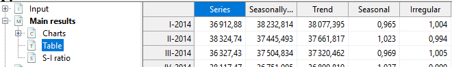

library("RJDemetra")
# the input series has to be a Time Series (TS) object
# specification RSAfull including pre-treatment
model_sa_v2 <- tramoseats(raw_series, spec = "RSAfull")SA: SEATS Decomposition
In this chapter
This chapter focuses on practical implementation of a SEATS decomposition using the graphical user interface GUI and R using R packages in version 2.x and 3.x. More explanations on SEATS algorithm can be found here.
In recent years SEATS has been tailored in JDemetra+ to handle high-frequency (infra-monthly) data, which is described here with more methodological details here.
The sections below will describe
specifications needed to run SEATS
generated output
Context
SEATS is the second (decomposition) step in a seasonal adjustment processing with Tramo-Seats, once a pre-treatment with Tramo has been performed. SEATS is an Arima Model Based (AMB) algorithm and will decompose the linearized series using the arima model fit in Tramo.
Tools for Seats decomposition
| Algorithm | Access in GUI | Access in R (v2) | Access in R v3 |
|---|---|---|---|
| Tramo-Seats | ✔️ | RJDemetra | rjd3tramoseats |
| Tramo only | ✔️ | RJDemetra | rjd3tramoseats |
Available frequencies in version 2 and version 3
| Version | GUI and R |
|---|---|
| v 2.x | \(p=12, 6, 4, 2\) |
| v 3.x | \(p=12, 6, 4, 3, 2\) |
SEATS Decomposition
SEATS algorithm will decompose the linearized series, in level or in logarithm, using the Arima model fitted by Tramo in the pre-treatment phase.
Quick Launch
Default specifications
The default specifications for SEATS must be chosen at the starting of the SA processing. Starting point for TRAMO-SEATS, detailed here
Using GUI
With a workspace open, an SAProcessing created and open data provider:
choose a default specification (link)
drop your data and press green arrow (link)
In R
In version 2 using RJDemetra
Full documentation of ‘RJDemetra::tramoseats’ function can be found here
The model_sa_v2 R object (list of lists) contains all parameters and results. Its structure is detailed here. It can be printed giving access to selected parameters, series and diagnostics.
print(model_sa_v2)In version 3 using rjd3tramoseats
library("rjd3tramoseats")
model_sa_v3 <- tramoseats(raw_series, spec = "RSAfull")
# the input series has to be a Time Series (TS) objectFull documentation of ‘rjd3tramoseats::tramoseats’ function can be found here.
The model_sa_v3 R object (list of lists) contains all parameters and results. Its structure is detailed here.
It can be printed giving access to selected parameters, series and diagnostics.
print(model_sa_v3)Retrieve Series
This section outlines how to retrieve the different kinds of output series from GUI or in R.
final components (including reallocation of pre-adjustment effects)
components in level
components in level or log
Stochastic series
Decomposition of the linearized series or of its logarithm (in case of a multiplicative model)
y_lin is split into components: t_lin, s_lin, i_lin
suffixes: - _f stands for forecast - _e stands for - _ef stands for
Display in GUI
NODE Decomposition>Stochastic series - Table with series and its standard error image
- Plot of Trend with confidence interval image
- Plot of Seasonal component with confidence interval image
Retrieve from GUI
Generating output from GUI (link) or from Cruncher (link), stochastic series, their standard errors, forecasts and forecasts errors can be accessed with the following names
| Series Name | Meaning |
|---|---|
| decomposition.y_lin | |
| decomposition.y_lin_f | |
| decomposition.y_lin_ef | |
| decomposition.t_lin | |
| decomposition.t_lin_f | |
| decomposition.t_lin_e | |
| decomposition.t_lin_f | |
| decomposition.sa_lin | |
| decomposition.sa_lin_f | |
| decomposition.sa_lin_e | |
| decomposition.sa_lin_ef | |
| decomposition.s_lin | |
| decomposition.s_lin_f | |
| decomposition.s_lin_e | |
| decomposition.s_lin_ef | |
| decomposition.i_lin | |
| decomposition.i_lin_f | |
| decomposition.i_lin_e | |
| decomposition.i_lin_ef |
Retrieve in R
In version 2
library("RJDemetra")
# list of additional output objects
user_defined_variables("TRAMO-SEATS")
# specify additional objects in estimation
m <- tramoseats(
series = y,
spec = "RSAfull",
userdefined = c(
"decomposition.y_lin", "ycal",
"variancedecomposition.seasonality"
)
)
# retrieve objects
m$user_defined$decomposition.y_lin
m$user_defined$ycal
m$user_defined$variancedecomposition.seasonalityIn version 3
library("rjd3tramoseats")
# list of additional output objects
userdefined_variables_tramoseats("tramoseats")
# specify additional objects in estimation
m <- tramoseats(
ts = y,
spec = "RSAfull",
userdefined = c(
"decomposition.y_lin", "ycal",
"variancedecomposition.seasonality"
)
)
# retrieve objects
m$user_defined$decomposition.y_lin
m$user_defined$ycal
m$user_defined$variancedecomposition.seasonalityComponents (Level)
Decomposition of the linearized series, back to level in case of a multiplicative model.
y_lin is split into components: t_lin, s_lin, i_lin
suffixes: - _f stands for forecast - _e stands for - _ef stands for
Displayed in GUI
NODE Decomposition>Components - Table with series and its standard error image
Retrieve from GUI
Generating output from GUI (link) or from Cruncher (link), component series, their standard errors, forecasts and forecasts errors can be accessed with the following names
| Series Name | Meaning |
|---|---|
| decomposition.y_cmp | |
| decomposition.y_cmp_f | |
| decomposition.y_cmp_ef | |
| decomposition.t_cmp | |
| decomposition.t_cmp_f | |
| decomposition.t_cmp_e | |
| decomposition.t_cmp_f | |
| decomposition.sa_cmp | |
| decomposition.sa_cmp_f | |
| decomposition.sa_cmp_e | |
| decomposition.sa_cmp_ef | |
| decomposition.s_cmp | |
| decomposition.s_cmp_f | |
| decomposition.s_cmp_e | |
| decomposition.s_cmp_ef | |
| decomposition.i_cmp | |
| decomposition.i_cmp_f | |
| decomposition.i_cmp_e | |
| decomposition.i_cmp_ef |
Retrieve in R
Same procedure as for stochastic series.
Bias correction
to be added
Final series
| Series | Final SEATS components | Final Results | Reallocation of pre-adjustment effects |
|---|---|---|---|
| Raw series (forecasts) | y (y_f) | ||
| Linearized series | none | ||
| Final seasonal component | s (s_f) | ||
| Final trend | t (t_f) | ||
| Final irregular | i (i_f) | ||
| Calendar component | |||
| Seasonal without calendar |
(to be added: reallocation of outliers effects)
Display in GUI
Final results are displayed for each series in the NODE MAIN>Table

Forecasts are glued at the end it italic
Retrieve from GUI
Generating output from GUI (link) or from Cruncher (link), component series, their standard errors, forecasts and forecasts errors can be accessed with the following names
| Series Name | Meaning |
|---|---|
| y | |
| y_f | |
| t | |
| t_f | |
| sa | |
| sa_f | |
| s | |
| s_f | |
| i | |
| i_f |
Retrieve in R
In version 2
library("RJDemetra")
sa_model <- RJDemetra::tramoseats(y, "RSAfull")
sa_model$final$series
sa_model$final$forecasts
# for additional results call user-defined output as explained aboveIn version 3
library("rjd3tramoseats")
sa_model <- tramoseats(y, spec = "RSAfull")
# final series can be accessed here
sa$result$final$sa
# for additional results call user-defined output as explained aboveRetrieve Diagnostics
- WK analysis
components final estimators
Error analysis autocorrelation of the errors (sa, trend) revisions of the errors
Growth rates
Model based tests
Significant seasonality
Stationary variance decomposition
Retrieve Final Parameters
Relevant if parameters not set manually, or any parameters automatically selected by the software without having a fixed default value. (The rest of the parameters is set in the specification) To manually set those parameters and see all the fixed default values see Specifications / parameters section
Arima Models for components
Display in GUI
Click on the Decomposition NODE

Retrieve from GUI
(add names for output and cruncher)
Display in R
(display or retrieve)
version 2
version 3
Other final parameters
Final parameters which can be fine-tuned be the user are described in User-defined specifications section below
Setting user-defined parameters
The section below explains how the user can fine-tune some seats parameters, which are put in context in the corresponding method chapter.the default value is indicated in ().
- Prediction length
Forecast span used in the decomposition default: one year (-1) (years are set in negative values, positive values indicate number of periods)
- Approximation Mode
Modification type for inadmissible models None (default) Legacy Noisy
- MA unit root boundary
Modulus threshold for resetteing MA “near-unit” roots [0,1] default (0.95)
Trend Boundary Modulus threshold for assigning positive real AR Roots [0,1] default (0.5)
Seasonal Tolerance Degree threshold for assigning complex AR roots [0,10] default (2)
Seasonal Boundary (unique) Modulus threshold for assigning negative real AR roots [0,1] default (0.8)
Seasonal Boundary (unique) Same modulus threshold unique seasonal AR roots [0,1] default (0.8)
Method
Algorithm used for estimation of unobserved components
Burman (default)
KalmanSmoother
McEllroyMatrix
Seting parameters in GUI
In specification window corresponding to a given series:

Set in R
version 2 (RJDemetra)
tramoseats_spec(
spec = c("RSAfull", "RSA0", "RSA1", "RSA2", "RSA3", "RSA4", "RSA5"),
fcst.horizon = NA_integer_,
seats.predictionLength = NA_integer_,
seats.approx = c(NA, "None", "Legacy", "Noisy"),
seats.trendBoundary = NA_integer_,
seats.seasdBoundary = NA_integer_,
seats.seasdBoundary1 = NA_integer_,
seats.seasTol = NA_integer_,
seats.maBoundary = NA_integer_,
seats.method = c(NA, "Burman", "KalmanSmoother", "McElroyMatrix")
)in version 3 with {rjd3tramoseats} (to be added)